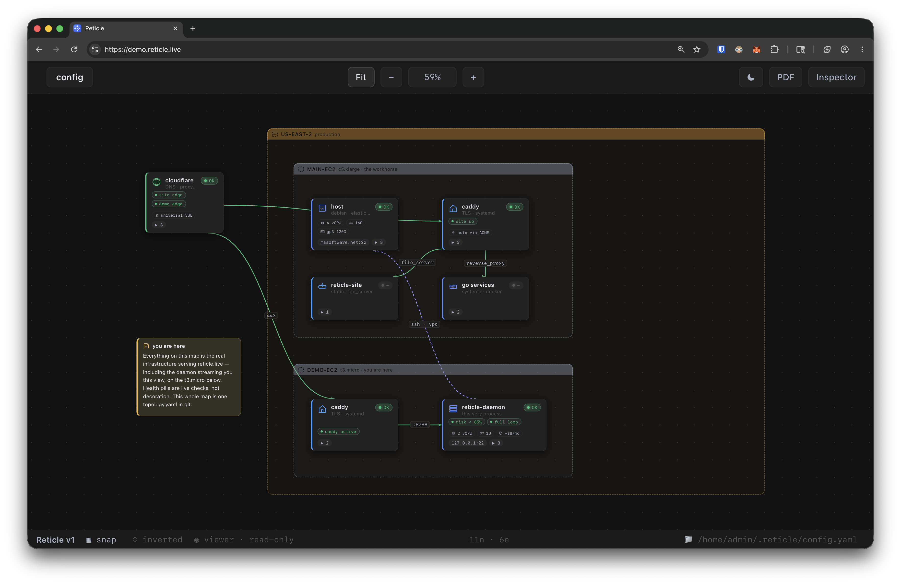
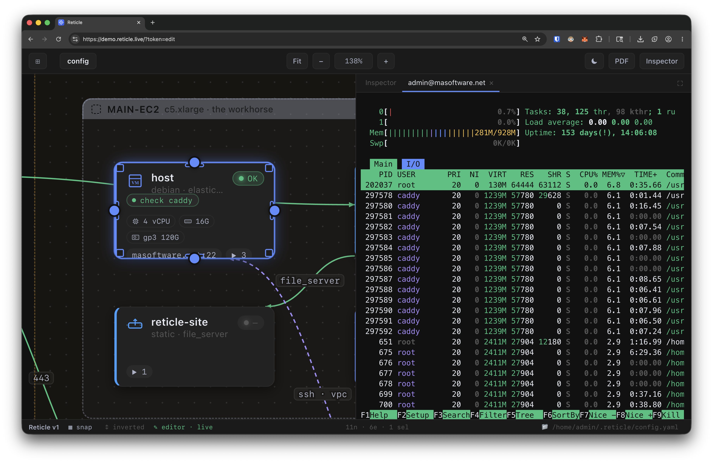
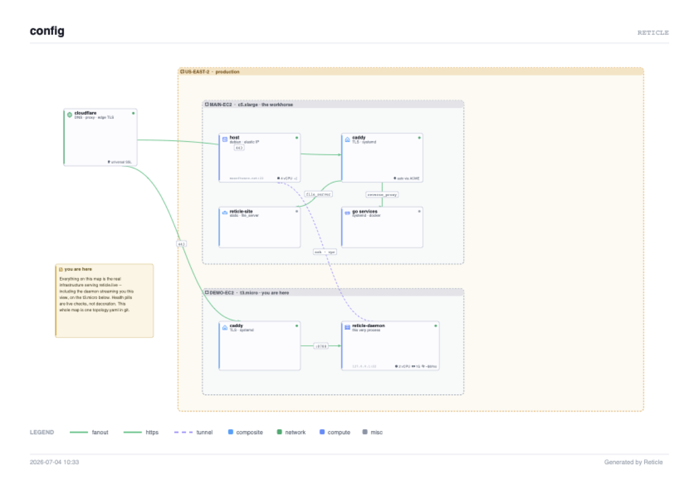

Draw your real systems on a beautiful canvas. Then watch them breathe — live health on every node, a real terminal one keypress away, and the whole map shared with your team in real time.
No account. No cloud. Your map is one topology.yaml you own.

A live daemon, a live topology, read-only access. What you're seeing is the actual health of the machines, right now.
Viewers can pan, inspect, and export — they can't change or run anything. Open full screen ↗
Named scripts run with one click — output right there on the map.
SSH scripts, local CLI calls, or HTTP endpoints — on a schedule, around the clock.
A failing check turns its node red — and shows which check, right on the card.
Infinite canvas, buttery pan and zoom, 30+ infra-native shapes, semantic edges. Clean enough to hand to a CTO — before it ever does anything live.
A real terminal over your own SSH or kubectl — plus one-click runbook actions with output inline. See the problem and fix the simple case without leaving the map.

One click → a print-quality vector PDF with the topology, the legend, and the health of the system at that moment. Attach it to the postmortem. Put it in the customer deck. It's true.

The team daemon serves this exact app to browsers on your network from a single tiny binary. Engineers work in it. Everyone else finally sees it — when something breaks, a viewer link shows anyone which box is red and what depends on it.
Forgetting a flag can never hand out write access. No edit token configured — nobody edits, nobody executes. Share the map as freely as a dashboard.
Editor and viewer tokens, checked in the daemon — not hidden buttons in the UI. A viewer physically cannot save, run, or open a shell. Wrong tokens are denied, never quietly downgraded.
One flag appends a JSON line for every connection, save, and command — including refused attempts. No flag, no file. Keystrokes are never logged.
For the person who runs their own stuff.
Reply within a day. Stripe invoicing: card, ACH, or bank transfer.
Yes — free, MIT-licensed, complete, forever. The paid product is genuinely different infrastructure: a shared always-on daemon for organizations. If you never need that, you never pay.
Never in Reticle and never in the YAML. The desktop app uses your own ssh and kubectl. The daemon runs commands with its host's credentials — teammates connect with a browser and a token, so nobody distributes keys.
Per running daemon, flat per year, unlimited teammates. One daemon serves one topology — most teams run one or two. Email us; we set it up together and invoice your org.
That's the default. A daemon with no edit token is read-only for everyone — viewers pan, inspect, watch live health, and export, but the server refuses every write and every command. Editing exists only if you explicitly configure an edit token and hand it to someone.
If you ask it to. Pass --audit-log audit.jsonl and the daemon appends one JSON line per connection, save, and command — including attempts it refused. No flag, no file, nothing collected. Keystrokes inside terminals are never logged (that's where passwords get typed).
No — Grafana and friends own deep metrics. Reticle is the layer above: the map of what you run, that can also touch what you run. Health here is "is it up, is its service alive" — answered where your eyes already are.
Map what you run with the free app — or put a living map in front of your whole team this week.